A Peneira
Salva-se muito e se volta a pouco: o aplicativo é generoso na promessa e avaro no endereço — mostra a vista e esconde o caminho. Daí a peneira. O que ficou tem nome, tem como chegar e, quase sempre, tem onde dormir. De um lado o que cabe num feriado; do outro o que pede calendário, paciência e certa dose de otimismo.
O que passa pelos furos: lugar que se alcança de carro, a pé, nadando, de barco ou de helicóptero, e casa que se possa alugar. Ficam de fora o projeto que ainda não existe, a paisagem que nasceu num gerador de imagem e o post que vende sem dizer onde é. Cada card leva ao post de origem e ao nome de quem publicou, e as fotos vêm desses mesmos posts. Nenhuma linha aqui foi paga: a curadoria se faz de gosto, não de contrato.
Esta lista é viva. Não tem número fechado nem edição definitiva: entra lugar quando passa pela peneira, e sai quando deixa de se sustentar. O que vale é o critério, não o tamanho.
Pra um feriadosaindo de São Paulo — carro ou voo curtosó este
Serra da Canastra · MG Brasil
Vista de dia, casarão à noite: dá um feriado inteiro na mesma região.


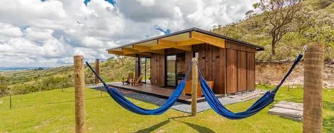
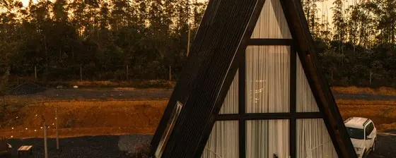
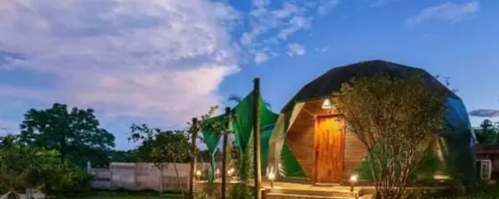
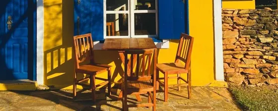
Ilhabela · SP Brasil
Onde comer na ilha (Enfim Ostras e cia.) está na aba fila.


Campos do Jordão · SP Brasil
Seis casas e nenhuma vista da cidade — em Campos, o que se aluga é o silêncio a dez minutos do Capivari.


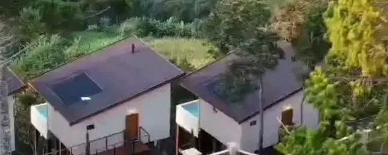
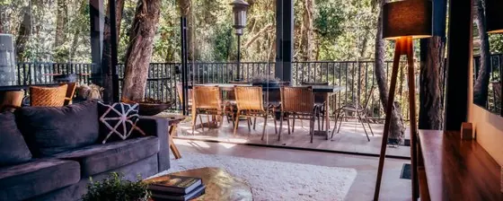
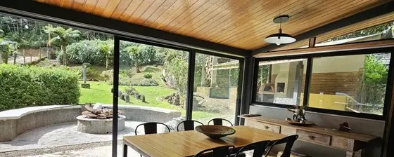
Litoral norte · Ubatuba e São Sebastião Brasil
Sete casas entre Picinguaba e São Sebastião — metade pé na areia, metade escondida na mata logo atrás dela.


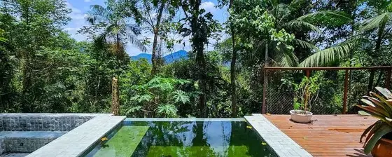
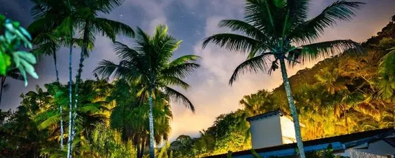
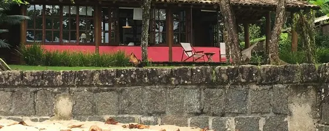
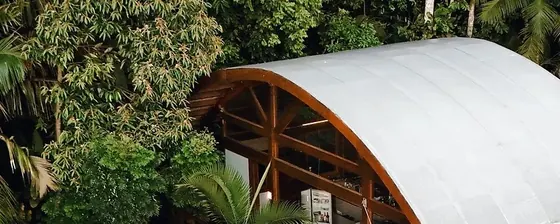
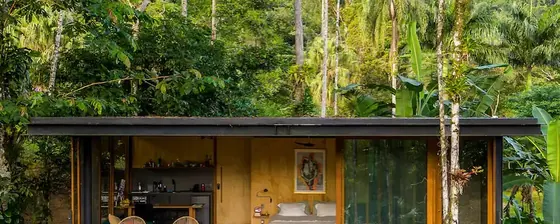
Costa Verde · Paraty e Mangaratiba Brasil
Onde a serra cai no mar, e a cachoeira desemboca quase na praia. Duas notas de nome: a Ilha dos Cocos daqui não é a Isla del Coco da Costa Rica, e o Saco do Mamanguá não é um fiorde — é uma ria.


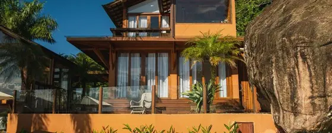
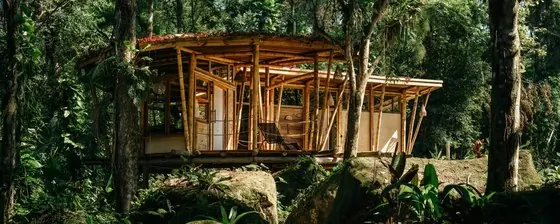
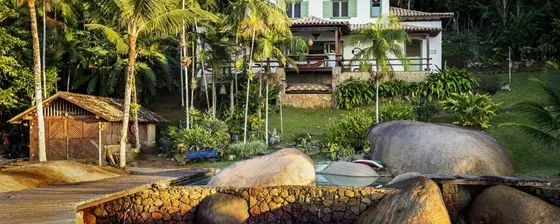
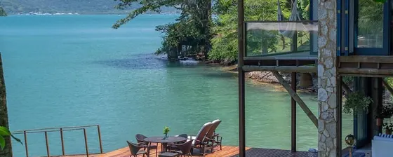
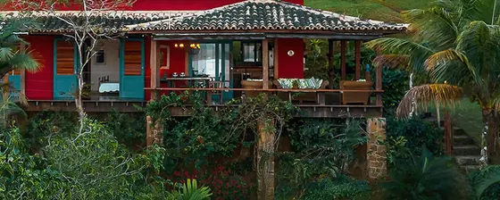
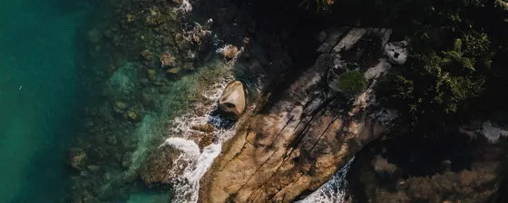
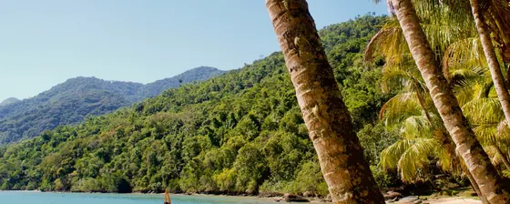
Vale do Café · RJ Brasil
O ciclo do café deixou dezenas de fazendas entre Vassouras e Valença, e entrar nessa história hospedado numa delas é o jeito menos abstrato de entrar.
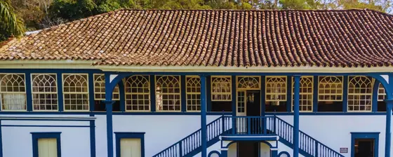
Serra da Mantiqueira Brasil
Vinte e duas casas na mesma serra: a escolha aqui é menos de destino e mais de qual vale se quer ver do deck.


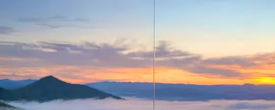
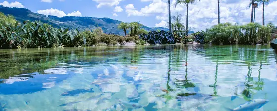
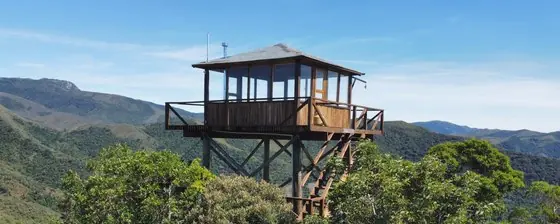
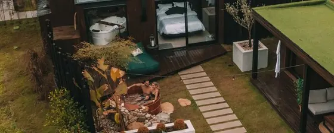
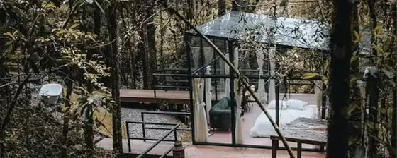
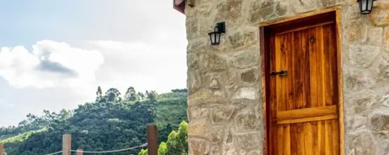
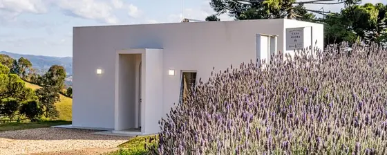
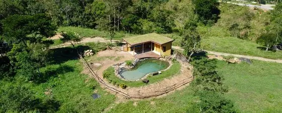
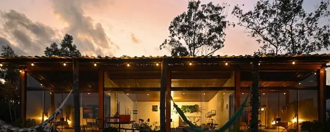
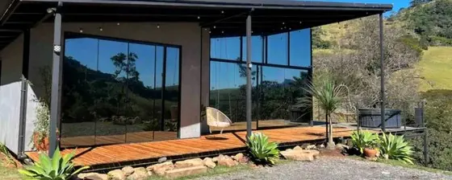
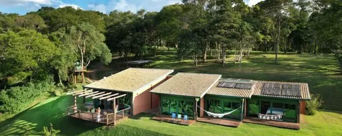
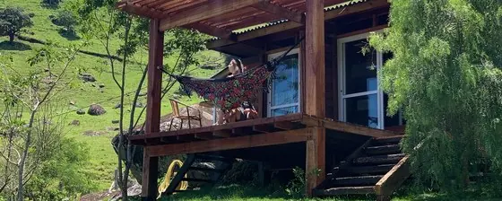
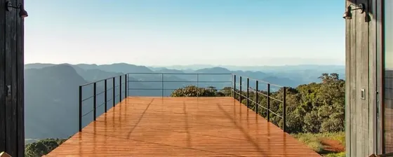
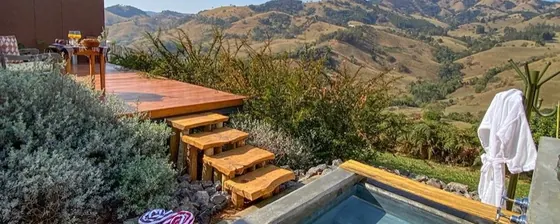
Serrinha do Alambari · RJ Brasil
Um poço só, mas vale a subida.

Visconde de Mauá · RJ Brasil
A vila fica na divisa de Resende com Bocaina de Minas, no pé da Mantiqueira pelo lado do Rio. A primeira casa da lista está cinco quilômetros fora dela, que é onde a vista aparece.
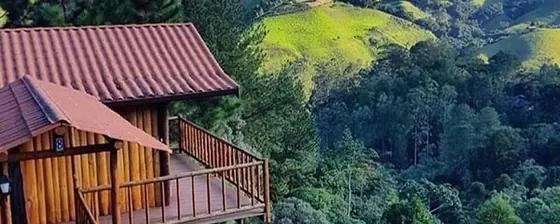
Parque Nacional do Itatiaia · RJ e MG Brasil
O primeiro parque nacional do Brasil, e dois parques dentro de um: a parte baixa é mata e cachoeira com carro na porta; a parte alta é campo de altitude a dois mil e setecentos, com cota diária e noite abaixo de zero.
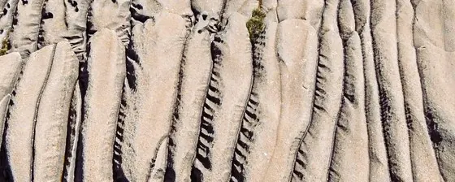
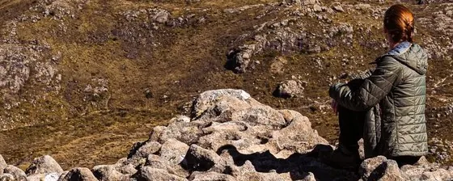
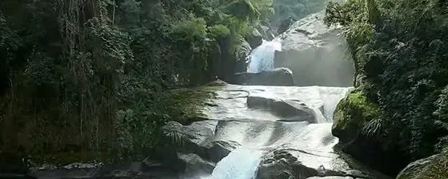
Petrópolis · RJ Brasil
O ranking do @pousadas.top é só o ponto de partida: ele lê nota pública de Google, Booking e TripAdvisor e não visita nada. O que cada casa é, abaixo, vem da própria casa.
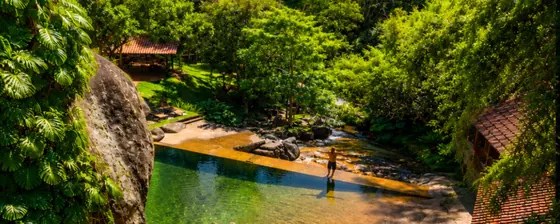
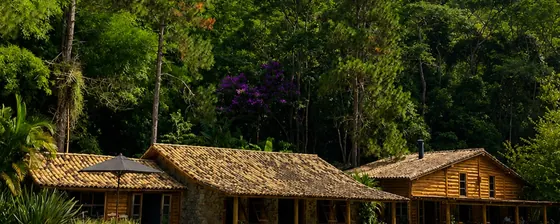
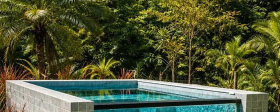
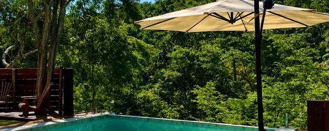
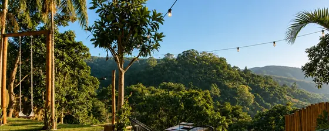
Piracaia · SP Brasil
Perto de São Paulo o bastante para ir na sexta à noite.

Bom Jesus dos Perdões · SP Brasil
Perto o bastante para ser decisão de sexta-feira.

Ibitipoca · MG Brasil
Seis mil hectares de mata regenerada, com hospedagem dentro e um mirante no fim da caminhada.

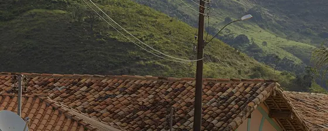
Serra da Moeda · MG Brasil
Quarenta minutos de Belo Horizonte, na crista da serra: perto o bastante pra ir na sexta, alto o bastante pra não parecer.
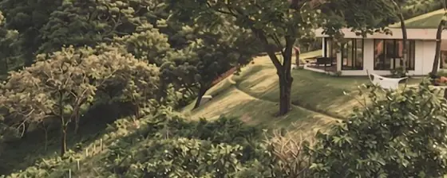
Bananal · SP Brasil
Uma cachoeira que quase ninguém procura, no caminho do Vale do Paraíba.

Cunha · SP Brasil
Duas casas da mesma fazenda, a Ybituí, viradas para a Serra do Mar. Falta ainda o achado 918 do @achadosguide, que fica aqui e cujo nome o post não diz.
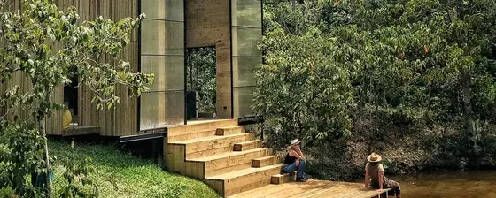
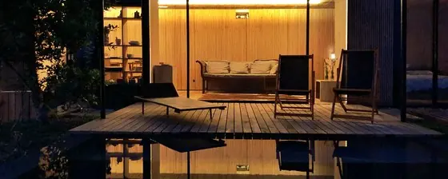
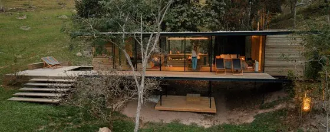
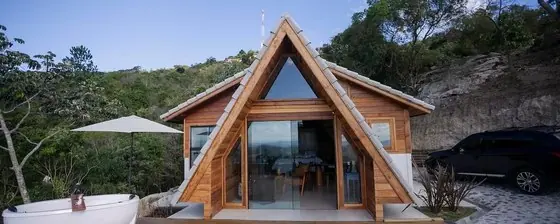
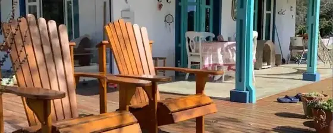
Serra da Bocaina · SP Brasil
Uma casa e uma travessia — a Bocaina tem pouca coisa alugável, e é exatamente isso que a mantém como é.
São Paulo · SP Brasil
A cidade dele entra pelo que se vê de cima, e por uma maternidade de 1944 que virou hotel.

Santa Catarina Brasil
Os cânions da serra e as cabanas que se alugam por ali.


Serra Gaúcha · RS Brasil
Quatro casas pequenas e muito diferentes entre si — de container a ofurô japonês — na serra que o resto do país só associa a vinho.
Campos de Cima da Serra · RS Brasil
Acima da serra gaúcha e antes dos cânions — planalto de campo aberto, araucária e rio correndo sobre laje.
Canela · RS Brasil
Um só cartão, e ainda em obra — mas é a volta de um hotel que a serra gaúcha passou cinco anos lamentando ter perdido.
Foz do Iguaçu · PR Brasil
A parte das cataratas que não é a fila do mirante.


Caminhos do Mar · SBC Brasil
Bate-volta clássico de SP que quase ninguém faz.

Pedra Azul · ES Brasil
Onde comer no ES (Pirá, Garden Bistrô) está na aba fila.

Vinícola em Minas Brasil
Dormir na vinícola, que é o que muda a visita.

Viagem grandepede planejamento — Brasil longe e mundo aforasó este
Lençóis Maranhenses · MA Brasil
Melhor época: fim das chuvas (jun–set), com as lagoas cheias.


Atins · MA Brasil
Vizinha dos Lençóis e, por decisão dele, destino à parte.


Pantanal Brasil
O barco é a casa e a natureza manda no horário.

Bonito · MS Brasil
A água transparente tem explicação geológica, e ela está no cartão.

Chapada dos Guimarães · MT Brasil
O centro geodésico da América do Sul, e o parque onde a regra pesa mais que a trilha: cota diária, portão que fecha ao meio-dia e condutor obrigatório em metade dos atrativos.
Chapada dos Veadeiros · GO Brasil
O ingresso é de quarenta e nove reais, vale só para a data comprada e não se remarca. Mas o que derruba gente não é o preço: é o horário. **O acesso a pé fecha ao meio-dia** e todo mundo tem de estar fora às seis. As trilhas são autoguiadas — guia não é obrigatório dentro do parque. E o entorno virou, nos últimos anos, a maior concentração de casa de arquitetura do cerrado.
Jalapão · TO Brasil
Dunas, fervedouros e uma serra que se sobe às cinco da manhã. Tudo aqui tem cota diária, condutor credenciado obrigatório e agendamento com quatro dias de antecedência — e a estrada exige 4x4 de verdade. Seca de maio a setembro.

Bahia Brasil
Três casas em três litorais diferentes da mesma Bahia. A Chapada Diamantina saiu daqui e virou destino próprio.


Chapada Diamantina · BA Brasil
O achado da pesquisa: dentro do Parque Nacional não há ingresso nem guia obrigatório por norma — quem cobra e quem exige são as camadas de fora, o parque municipal, a fazenda e a associação de condutores. Cada cartão diz qual é o caso.
Praia do Espelho · BA Brasil
Entre Trancoso e Caraíva, no fim de uma estrada de terra que atravessa rio — e é isso que a mantém como está.
Praia do Forte · BA Brasil
A casa que ele aluga, nas piscinas naturais.

Boipeba · BA Brasil
Duas casas e nenhuma estrada: para chegar em Boipeba se troca de barco, e é exatamente isso que a mantém como é.

Barra Grande · Península de Maraú Brasil
Casa de um lado, cachoeira do outro, na mesma península.


Fernando de Noronha · PE Brasil
A pousada que já virou instituição na ilha.

Cânions do Xingó · AL/SE Brasil
O São Francisco entre paredões, e se entra de barco.

Piauí Brasil
Dois lugares de sertão bruto que quase ninguém procura — e, agora, onde dormir antes e depois deles.


Agreste pernambucano Brasil
Um arco de pedra no meio do agreste.

João Pessoa · PB Brasil
A capital entra pela orla do Cabo Branco, que é onde a cidade fica de frente para o mar.
Litoral de Alagoas Brasil
Dunas de um lado; do outro, a Rota Ecológica dos Milagres, que é onde estão as três casas.


Tatajuba · Ceará Brasil
Duna, lagoa e uma casa só, longe de Jeri.

Jericoacoara · CE Brasil
A vila que o índice vinha contornando, e que entra por dois endereços da mesma casa: um para sumir, outro para ficar no meio do barulho.
Preá · CE Brasil
Vizinha de Jericoacoara, com a vantagem de não ser Jericoacoara.

Tabatinga e Baía dos Golfinhos · RN Brasil
Casa que se recomende por ali, nenhuma até agora; a vista terá de bastar.

Quirguistão Ásia e Oriente
O lago tem nome e a expedição tem dono — é por aí que se chega.


Cazaquistão Ásia e Oriente
Combina com o Quirguistão numa expedição só pela Ásia Central.

Groenlândia Américas
Oito dias entre icebergs, dormindo no próprio veleiro.


Patagônia · Chile & Argentina Américas
Os dois lados da mesma cordilheira, mais a costa onde as baleias param.


Bariloche e os Sete Lagos · Argentina Américas
Cento e dez quilômetros de estrada e um bosque que ficou dentro do lago.


Jujuy · Argentina Américas
O altiplano colorido, com o salar a uma hora da quebrada.


Andes Américas
O que se faz na cordilheira quando não se está só atravessando.


Passos de cordilheira · Argentina e Chile Américas
Quatro travessias que ele fez de moto e de caminhonete.


Bolívia Américas
O salar e o que se arruma para dormir nele.

Peru Américas
Quatro paradas da expedição do Maurício, nenhuma delas Machu Picchu.


Arica · Chile Américas
A ponta norte do Chile, onde o deserto encosta no mar.

Pucón · Chile Américas
Um vulcão ativo de cratera aberta, e sobe-se nele.

América do Norte Américas
Duas maneiras de entrar num cânion: a pé de madrugada e a cavalo.


Whistler · Canadá Américas
Voltou com nome. Da descida de dupla preta ao caminho plano que liga os lagos — e três casas de verdade na beira da água.
Nicarágua Américas
Descer um vulcão de tábua, que é coisa que só existe ali.

Riviera Maya · México Américas
Uma casa só — a que justifica a parada.

Namíbia África
Deserto sem luz nenhuma, que é o que faz a Via Láctea aparecer.

Ilhas da África — cinco endereços África
Nenhum tem mais de quinze acomodações, e em todos o caminho até a porta já faz parte da viagem.


Quênia África
Uma casa só, e é por causa dela.

Corrida das sardinhas · África do Sul África
De maio a julho, e em alguns anos simplesmente não acontece — 2003 e 2006 passaram em branco, e em 2026 a água esquentou em junho e travou tudo.


Islândia Europa
A ilha fora do Golden Circle: sete lugares que o roteiro padrão pula, e a travessia de quatro dias.


Ilhas Faroé Europa
Três salvos — as Faroé estão subindo na tua lista.


Noruega Europa
Um restaurante submerso, uma pedra suspensa e uma estrada que se desce de wingsuit.


Áustria Europa
Hallstatt fora do horário do ônibus de excursão.

Bósnia e Herzegovina Europa
O road trip que ninguém faz, que é exatamente a razão de fazer.

Albânia · a riviera jônica Europa
A riviera que está sendo construída agora — e o túnel que, desde 2024, deixou de obrigar quem chega a cruzar a montanha.
Albânia · os Alpes e as cidades de pedra Europa
O outro país dentro do mesmo país: a travessia dos Alpes, a balsa do Drin e duas cidades otomanas no mesmo registro da UNESCO.
Interlaken · Suíça Europa
Uma casa só, para usar os Alpes de base.

Itália Europa
Vista, praia, cidade e até casa pra comprar — e quatro lugares que parecem invenção. As Dolomitas saíram daqui e ganharam bloco próprio.


Dolomitas · Itália Europa
A parte difícil aqui não é achar o lugar, é entrar nele: vários destes pontos têm cota, reserva ou estrada fechada por horário. O primeiro cartão é o roteiro de sete dias que amarra doze paradas em um loop de 362 km; o resto são os lugares, um a um.


Valtellina · Bormio e os passos Europa
Bormio é o único lugar da Europa onde Stelvio, Gavia e Mortirolo saem da mesma porta — e a porta, aqui, tem nome: a do Daniele.

Alpes — a pé e de bike Europa
Teu bloco mais salvo da Europa: montanha, trilha e bike.


Reino Unido Europa
A Escócia bruta: Glen Coe, Skye e o silêncio entre os dois.


França Europa
Ele mandou refazer a França com o mesmo critério do resto: nada de cartão-postal. O que ficou foi estrada escavada na rocha, aldeia sem estrada, cota de parque nacional e uma noite dentro de um observatório a dois mil oitocentos e setenta e sete metros.


País Basco · o vale do Etxebarri Europa
Ele pediu "a região onde fica o Asador Etxebari, San Lorenzo acho q chama". Não é San Lorenzo: é Axpe, no vale de Atxondo, e o endereço é a Praça San Juan — daí a troca. O que faz a viagem não é só a mesa: é o vale, o Anboto com a cova da deusa Mari e a costa de Urdaibai a quarenta minutos.
Croácia Europa
Sem Dubrovnik e sem Plitvice de cartão-postal. O que ficou foi ilha desabitada com taxa por barco, uma gruta que só abre por fila, e uma trilha de cinquenta e sete quilômetros construída à mão nos anos 1930.
Montenegro Europa
Um país do tamanho de um estado pequeno com o segundo cânion mais fundo da Europa, uma estrada de vinte e cinco curvas e um lago onde a multa é por chegar perto de pelicano.
Portugal · o continente Europa
Sem Lisboa, sem Sintra e sem Benagil. O que sobra é a serra, o Douro, uma aldeia que reaparece quando a albufeira baixa e a única falésia do mundo onde a cegonha faz ninho sobre o mar.
Açores Europa
Duas ilhas e duas escalas: o ponto mais alto de Portugal, que se sobe com rastreador e cota, e a ilha das Flores, onde a estrada acaba antes da paisagem começar.
Madeira · Portugal Europa
As levadas, a descida de vime — e a Madeira que quase ninguém anda: a floresta de nevoeiro e a península seca. Desde dezembro de 2025 os percursos classificados têm reserva obrigatória por janela de trinta minutos.


Rotas de carro na Europa Europa
Duas rotas para dirigir, com os nomes de cada trecho.


Turquia Ásia e Oriente
Os balões da Capadócia, que só sobem de madrugada.


China Ásia e Oriente
O país mais subestimado por quem gosta de hotel — e um café dentro de uma caverna.


Sikkim · Índia Ásia e Oriente
A rota da seda pelo lado indiano do Himalaia.

Raja Ampat · Indonésia Ásia e Oriente
Uma casa só, no meio do arquipélago mais biodiverso do mar.

Filipinas Ásia e Oriente
Ele salvou uma foto daqui sem endereço, de um post que vende guia. O que se sustenta com fonte está abaixo — e junto vai o aviso: El Nido recebeu quinhentos mil visitantes em 2023, contra trezentos e onze mil em 2019, e o Banco Asiático de Desenvolvimento calculou setenta pessoas por dia de capacidade no lago Kayangan, em Coron, onde o pico real foi de seiscentas e três. Coron entra quando houver foto com crédito que mostre o lugar.


Palau, Yap e Guam Oceania
Ele esteve nos três. São três países diferentes no papel — Palau é independente, Yap é um estado dos Estados Federados da Micronésia e Guam é território americano — e a diferença aparece no visto e no jeito de voar entre eles.
Maldivas Ásia e Oriente
O tipo de endereço que dispensa apresentação e cobra por ela.

AlUla · Arábia Saudita Ásia e Oriente
Três hotéis que a arquitetura escondeu na própria rocha.

Mar Vermelho · Arábia Saudita Ásia e Oriente
O país abriu ao turismo em 2019 e construiu a costa inteira de uma vez; o que já existe de verdade, e abre a porta, ainda é pouco.
Guatemala Américas
As piscinas de Semuc Champey, empilhadas sobre um rio subterrâneo.

Venezuela Américas
A Gol voltou a voar de São Paulo em setembro de 2026, mas o país segue em nível 3 no aviso do Departamento de Estado americano e os dois lugares só se alcançam por voo doméstico — não é viagem de improviso.


Galápagos · Equador Américas
Darwin e Wolf só se alcançam de barco-casa, e poucos têm licença.

Ilha do Coco · Costa Rica Américas
Quinhentos quilômetros mar adentro, e a casa é o barco. Não é a ilha do Coco de Angra dos Reis: esta é a Isla del Coco, no Pacífico da Costa Rica.

Papua-Nova Guiné Oceania
O Mar de Bismarck, onde o coral tem mais espécie por metro do que em qualquer lugar.

Mar de Coral · Austrália Oceania
Quatro dos live-aboards que ele pediu: aqui a casa é o barco.


Cairns e Townsville · Queensland Oceania
O corredor que ele fez: Cairns de um lado, Townsville do outro, o rafting no meio do caminho e o naufrágio no fim.
Blue Mountains · NSW Oceania
Duas horas de trem da Central de Sydney. Metade das trilhas famosas está fechada por deslizamento — aqui estão as que funcionam.
Great Ocean Road · Victoria Oceania
Nunca foram doze, e hoje são sete. A estrada que os soldados da Primeira Guerra construíram como memorial, e o que ainda se vê dela.


Comida salva que ainda não entrou nos guias — São Paulo está de molho por enquanto, Europa espera o guia nascer. Quando entrar, sai daqui.
São Paulo
- 12 omakases de SP, pela Monique Balazs @monique.balazs
- Onde comer no centro de SP @juliananegreti
- Melhores comes e bebes de julho @pedroforato
- Novos restaurantes de SP para zerar @tipsbygelly
- Yamaga — o japonês 'bom mesmo' da Liberdade @sushi_urbano
- Onde comer na Liberdade @monique.balazs
- 15 lasanhas de SP @findandeat
- Onde comer bem em Campos do Jordão @tipsbygelly
- Flora Bar — o hot dog da Padre João Manuel @florabar.sp
- Fuoco e Farina — massas e fogo @juliananegreti
- Dezè, do casal Yuri e Joanna @gastrodeias
- Hon Maguro — atum em três atos (Jardins/Itaim) @hon_magurobr
- 'Pagaria para esquecer e provar de novo' — Saiko, Aio, Z-Deli... @nhac_byisa
- Guia coreano parte 2 @taste.2good
- Cachorro-quente em Alphaville @veroalphaville
- O rooftop gastronômico do Morumbi Shopping @oquefazersp
- Cozinha dos Ferrari — arroz de polvo na Mooca @cozinhadosferrari
- Manual de bairro ep. 1 — a Barra Funda em sete endereços: Pilotto, Bar Sururu, Komah, Farinha, Ronin, Água e Biscoito e Tão Longe Tão Perto @julianadolenc
- Dajire — o primeiro malatang da Liberdade, de montar a própria tigela @compartilharadois
Europa
- O momento de Madrid, pelo The Pig Journal @thepig.journal
- Ruta de pintxos em Santutxu, Bilbao @bilbourbanfood
- A tapa de polvo gigante de O Carballiño, Galícia @galicia.angibaldrich
- Crudi memoráveis em Milão @amilanopuoi
- Asador a 1h de Madrid, em Zamora @laubicacionperfecta
- A paella do Borough Market, Londres @comendonasruas
- Espanha do Crítico Antigourmet para O Globo @ocritico.antigourmet
- Astúrias — sidra, mar e montanha @revistaunquiet
- Narru — cozinha basca contemporânea em San Sebastián @taste.2good
- Pintxos crawling em San Sebastián — o que vale e o que pular @dishandtrips
- 'Erro chegar em San Sebastián de estômago vazio' @_camillaandersen
- Onde comer em Madri, pelo Mohindi @mohindi
- O restaurante flutuante de Mykonos @mjeanpierre29
- Bar à Vin em Paris — a lista da Vivi Lescher @vivilescher_wine
- Kinugawa — japonês em Saint-Tropez @primefoodandtips
Espírito Santo
- Pirá, em Anchieta — frutos do mar na brasa (2 salvos) @canalcomendoomundo
- Garden Bistrô, Pirá e mais — 3 mesas capixabas @capixabanaestrada
Coreia
- San — o Michelin de Apgujeong do chef Cho Seung-hyun @puragiology
- Busan Juinjang — sashimi de espécie da estação @busan_juinjang
- O noodle de peixe de Seokchon, Seul @biteofyommy
- Torino Tsuki — yakitori e nama biru em Seokchon @puragiology
- Gorogoro — o kaisendon de Yongsan, e o toro-sushi novo da casa @coco._.noted
América do Sul
- El Asadito — a casa de carnes de Mendoza @taste.2good
- Quimera Bistró — na Bodega Quimera, Luján de Cuyo @almatrip.br
Rio de Janeiro
- As escolhas gastronômicas de agosto da Ana Pimenta @ana.pimenta
Ilhabela
- Enfim Ostras + o outro imperdível da ilha @monique.balazs
Peru
- Onze mesas peruanas, do Maido à cozinha criolla @andeanperuexploor
Tailândia
- Thaan — tudo no carvão, na Sukhumvit 31, Bangkok @thaan.bangkok